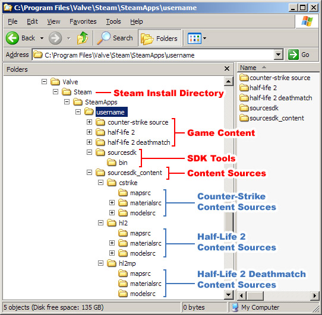

The Source SDK Files and Directory Structure
With the latest SDK release, the default directory structure will be changed to remove the restriction of having to save your game content into the \sourcesdk directory tree. This document explains how the Source SDK directory structure is will be set up.
- The directory structure explained
- Examples of using the directory structure
- Copy existing content and SDK samples sources
The directory structure explained
The SDK directory structure is now set up so that game content directories are separated from game sources directories.
Game content files are the actual files necessary to run the game — textures, maps, models, etc.
Game sources are the files that are used to create that game content (the "source" of the game content).
This table explains some of the different game content and game source file types in the SDK:
File type |
Description |
Location |
.VMF |
Map source files. |
sourcesdk_content\<game name>\mapsrc |
.TGA .TXT |
Texture source files. |
sourcesdk_content\<game name>\materialsrc |
.SCN .SMD .QC |
Model source files. |
sourcesdk_content\<game name>\modelsrc |
.BSP |
Map content files — compiled game maps. |
<game name>\maps |
.VMT .VTF |
Texture content files — compiled game textures. |
<game name>\materials |
.MDL .VTX |
Model content files — compiled game models/props. |
<game name>\models |
The following image shows the default locations for these files and folders:

Steam Install Directory |
The location where you've installed Steam. |
Game Content |
The game content is here, with all the files necessary to run each game under each game directory. |
SDK Tools |
The location of the applications necessary to create and compile SDK content. |
Content Sources Directories |
Directories for each of the types of game content sources are here, with a set of directories for each game you want to create content for. |
Examples of using this SDK directory structure
Here are some practical examples of how this structure is used:
Creating a level for Counter-Strike: Source:
- Launch the Hammer level editor, which is launched from the SDK Tools Directory.
- Save the map as a .VMF into the cstrike\mapsrc directory, which is under Content Sources.
- Compile the map inside Hammer. The map is compiled as a .BSP and automatically placed in the cstrike\maps Game Content directory.
Creating a texture for Half-Life 2: Deathmatch:
- Create a texture in an image editing application, and save it as a .TGA in the hl2mp\materialsrc directory, which is under Content Sources.
- Compile the texture with Vtex.exe, which is in the SDK Tools Directory.
- The texture is compiled as a .VTF and automatically placed in the hl2mp\materials Game Content directory.
- Create the .VMT material file with a text editor, and save it in the hl2mp\materials Game Content directory.
Creating a model for Half-Life 2:
- Create a model in Softimage|XSI EXP, and export it as an .SMD in the hl2\modelsrc directory, which is under Content Sources.
- Create the .QC model definition file with a text editor, and save it in the hl2\modelsrc directory, which is under Content Sources.
- Compile the model with Studiomdl.exe, which is in the SDK Tools Directory.
- The model is compiled as a .MDL and automatically placed in the hl2\models Game Content directory.
For in-depth descriptions of these procedures, see the appropriate section of the Source SDK Documentation.
Copy existing SDK content to the new directory structure
If you already have SDK content you've created under the old \sourcesdk directory structure before this update, you may wish to move it to this new setup. To copy the files to the new locations, follow the instructions in this document, Migrating SDK Content to the new SDK Directory structure.
If you wish you can leave you files in the previous location, but you should be aware that it is possible that you may not be able to take full advantage of content added in future SDK updates.
IMPORTANT: If you did not add any content (maps, models, textures) while the content was saved under \sourcesdk, you do not need to follow these instructions. Basically, if you've never added content before the directory structure changeover, your Source SDK configuration should already be set up correctly.
© 2004 Valve Corporation. All rights reserved. Valve, the Valve logo, Half-Life, the Half-Life logo, the Lambda logo, Steam, the Steam logo, Team Fortress, the Team Fortress logo, Opposing Force, Day of Defeat, the Day of Defeat logo, Counter-Strike, the Counter-Strike logo, Source, the Source logo, Hammer and Counter-Strike: Condition Zero are trademarks and/or registered trademarks of Valve Corporation. Microsoft and Visual Studio are trademarks and/or registered trademarks of Microsoft Corporation. All other trademarks are property of their respective owners.